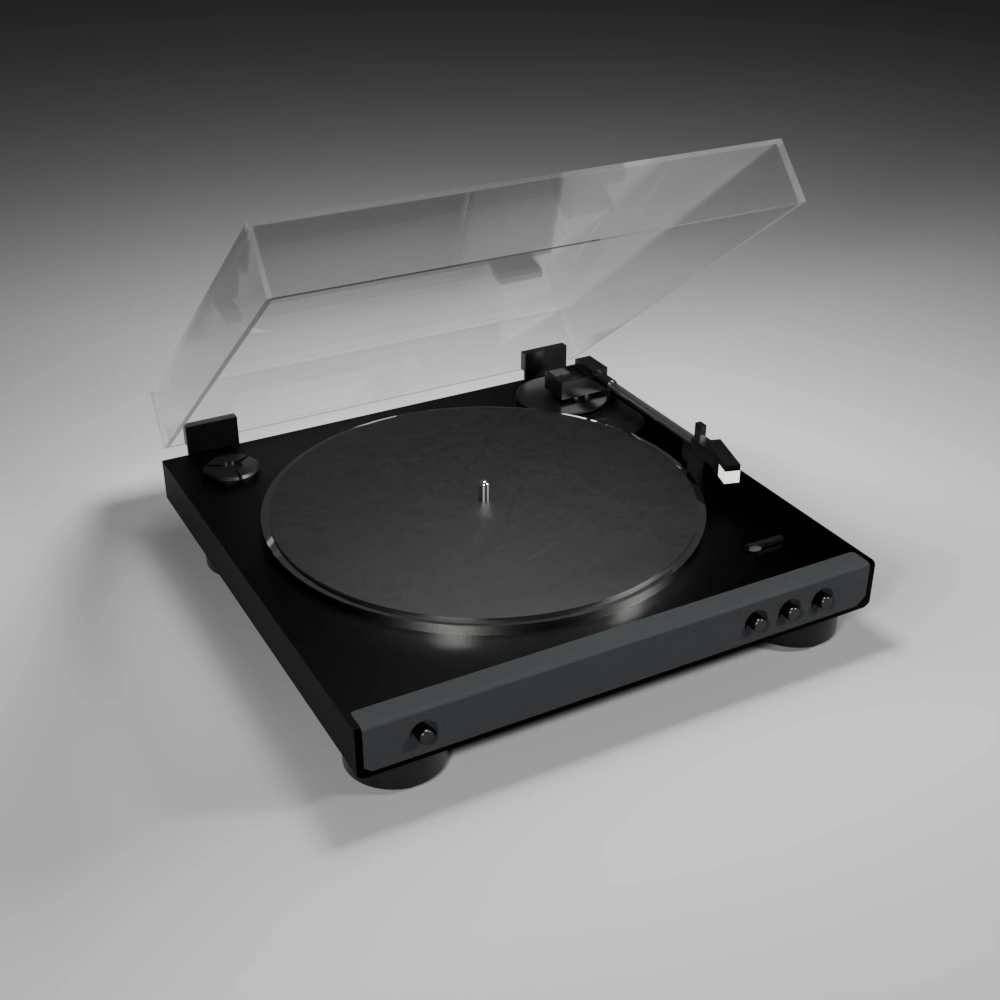

RecordPlayer

レコードは、音を物理的な溝に刻んで再生するアナログ音源であり、温かみのある独特の音質が特徴です。 ジャケットや盤面などのデザインも魅力のひとつで、所有する楽しみがあります。再生には専用のターン テーブルが必要で、レコードにはA面・B面があるため、裏返して聴くという手間もあります。また、使用 や経年によってチリチリとしたノイズや歪みが生じることもありますが、それも含めてレコードならではの 味わいとされています。
Audio-Technicaのレコードプレーヤーは、価格と性能のバランスが良く、初心者から中級者まで扱いやすいのが魅力です。 USB出力によるデジタル録音や、高品質なカートリッジ、信頼性の高い日本製設計など、多機能かつ堅実な作りが特徴です。 初めての一台としても、コスパ重視の選択肢としても「間違いない王道」です。